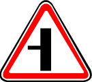
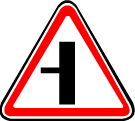
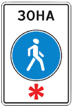
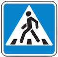

1.1. Настоящие Правила дорожного движения устанавливают единый порядок дорожного движения на всей территории Российской Федерации. Другие нормативные акты, касающиеся дорожного движения, должны основываться на требованиях Правил и не противоречить им.
1.2. В Правилах используются следующие основные понятия и термины:
Автомагистраль
— дорога, обозначенная
знаком 5.1  и имеющая для каждого направления движения проезжие части, отделенные друг от друга разделительной полосой (а при ее отсутствии — дорожным ограждением), без пересечений в одном уровне с другими дорогами, железнодорожными или трамвайными путями, пешеходными или велосипедными дорожками.
и имеющая для каждого направления движения проезжие части, отделенные друг от друга разделительной полосой (а при ее отсутствии — дорожным ограждением), без пересечений в одном уровне с другими дорогами, железнодорожными или трамвайными путями, пешеходными или велосипедными дорожками.
Автопоезд — механическое транспортное средство, сцепленное с прицепом (прицепами).
Велосипед — транспортное средство, кроме инвалидных колясок, которое имеет по крайней мере два колеса и приводится в движение как правило мускульной энергией лиц, находящихся на этом транспортном средстве, при помощи педалей или рукояток и может также иметь электродвигатель номинальной максимальной мощностью в режиме длительной нагрузки, не превышающей 0,25 кВт, автоматически отключающийся на скорости более 25 км/ч. (абзац изменён в редакции Постановления Правительства РФ от 22.03.2014 № 221, от 06.10.2022 № 1769)
Велосипедист — лицо, управляющее велосипедом. (абзац введён в редакции Постановления Правительства РФ от 22.03.2014 № 221)
Велосипедная дорожка — конструктивно отделенный от проезжей части и тротуара элемент дороги (либо отдельная дорога), предназначенный для движения велосипедистов и лиц, использующих для передвижения средства индивидуальной мобильности, и обозначенный знаком 4.4.1 . (абзац введен в редакции Постановления Правительства РФ от 22.03.2014 № 221, в редакции Постановления Правительства РФ от 06.10.2022 № 1769)
Велосипедная зона — территория, предназначенная для движения велосипедистов и лиц, использующих для передвижения средства индивидуальной мобильности, начало и конец которой обозначены соответственно знаками 5.33.1 и 5.34.1 . (абзац введен в редакции Постановления Правительства РФ от 04.12.2018 № 1478, в редакции Постановления Правительства РФ от 06.10.2022 № 1769)
Водитель — лицо, управляющее каким-либо транспортным средством, погонщик, ведущий по дороге вьючных, верховых животных или стадо. К водителю приравнивается обучающий вождению.
Вынужденная остановка — прекращение движения транспортного средства из-за его технической неисправности или опасности, создаваемой перевозимым грузом, состоянием водителя (пассажира) или появлением препятствия на дороге.
Гибридный автомобиль — транспортное средство, имеющее не менее 2 различных преобразователей энергии (двигателей) и 2 различных (бортовых) систем аккумулирования энергии для целей приведения в движение транспортного средства. (абзац введен Постановлением Правительства РФ от 12.07.2017 N 832)
Главная дорога
— дорога, обозначенная знаками
2.1  ,
2.3.1 — 2.3.7
,
2.3.1 — 2.3.7 
 



 или
5.1
или
5.1  , по отношению к пересекаемой (примыкающей), или дорога с твердым покрытием (асфальто- и цементобетон, каменные материалы и тому подобное) по отношению к грунтовой, либо любая дорога по отношению к выездам с прилегающих территорий. Наличие на второстепенной дороге непосредственно перед перекрестком участка с покрытием не делает ее равной по значению с пересекаемой.
, по отношению к пересекаемой (примыкающей), или дорога с твердым покрытием (асфальто- и цементобетон, каменные материалы и тому подобное) по отношению к грунтовой, либо любая дорога по отношению к выездам с прилегающих территорий. Наличие на второстепенной дороге непосредственно перед перекрестком участка с покрытием не делает ее равной по значению с пересекаемой.
Дневные ходовые огни — внешние световые приборы, предназначенные для улучшения видимости движущегося транспортного средства спереди в светлое время суток.
Дорога — обустроенная или приспособленная и используемая для движения транспортных средств полоса земли либо поверхность искусственного сооружения. Дорога включает в себя одну или несколько проезжих частей, а также трамвайные пути, тротуары, обочины и разделительные полосы при их наличии.
Дорожное движение — совокупность общественных отношений, возникающих в процессе перемещения людей и грузов с помощью транспортных средств или без таковых в пределах дорог.
Дорожно-транспортное происшествие — событие, возникшее в процессе движения по дороге транспортного средства и с его участием, при котором погибли или ранены люди, повреждены транспортные средства, сооружения, грузы либо причинен иной материальный ущерб.
Железнодорожный переезд — пересечение дороги с железнодорожными путями на одном уровне.
Маршрутное транспортное средство — транспортное средство общего пользования (автобус, троллейбус, трамвай), используемое при осуществлении регулярных перевозок пассажиров и багажа в соответствии с законодательством Российской Федерации об организации регулярных перевозок и движущееся по установленному маршруту с обозначенными местами остановок. (в редакции Постановления Правительства РФ от 06.10.2022 № 1769)
Механическое транспортное средство — транспортное средство приводимое в движение двигателем. Термин распространяется также на любые тракторы и самоходные машины. Термин не распространяется на средства индивидуальной мобильности и велосипеды. (абзац изменён в редакциях Постановлений Правительства РФ от 22.03.2014 № 221, от 06.10.2022 № 1769)
Мопед — двух- или трехколесное механическое транспортное средство, максимальная конструктивная скорость которого не превышает 50 км/ч, имеющее двигатель внутреннего сгорания с рабочим объемом, не превышающим 50 куб. см, или электродвигатель номинальной максимальной мощностью в режиме длительной нагрузки более 0,25 кВт и менее 4 кВт. К мопедам приравниваются квадрициклы, имеющие аналогичные технические характеристики. (абзац изменён в редакции Постановления Правительства РФ от 22.03.2014 № 221 и дополнен в редакции от 30.07.2014 № 714)
Мотоцикл — двухколесное механическое транспортное средство с боковым прицепом или без него, рабочий объем двигателя которого (в случае двигателя внутреннего сгорания) превышает 50 куб. см или максимальная конструктивная скорость (при любом двигателе) превышает 50 км/ч. К мотоциклам приравниваются трициклы, а также квадрициклы с мотоциклетной посадкой или рулем мотоциклетного типа, имеющие ненагруженную массу, не превышающую 400 кг (550 кг для транспортных средств, предназначенных для перевозки грузов) без учета массы аккумуляторов (в случае электрических транспортных средств), и максимальную эффективную мощность двигателя, не превышающую 15 кВт. (абзац изменён в редакции Постановления Правительства РФ от 24.10.2014 г. N 1097)
Населенный пункт — застроенная территория, въезды на которую и выезды с которой обозначены знаками 5.23.1 — 5.26 .
Недостаточная видимость — видимость дороги менее 300 м в условиях тумана, дождя, снегопада и тому подобного, а также в сумерки.
Обгон — опережение одного или нескольких транспортных средств, связанное с выездом на полосу (сторону проезжей части), предназначенную для встречного движения, и последующим возвращением на ранее занимаемую полосу (сторону проезжей части).
Обочина
— элемент дороги, примыкающий непосредственно к проезжей части, отличающийся типом покрытия или выделенный с помощью
разметки 1.2  , используемый для движения, остановки и стоянки в соответствии с Правилами. (абзац введен Постановлением Правительства РФ от 14.12.2005 № 767; в ред. Постановлений Правительства РФ от 28.06.2017 № 761, от 06.10.2022 № 1769)
, используемый для движения, остановки и стоянки в соответствии с Правилами. (абзац введен Постановлением Правительства РФ от 14.12.2005 № 767; в ред. Постановлений Правительства РФ от 28.06.2017 № 761, от 06.10.2022 № 1769)
Обучающий вождению — педагогический работник организации, осуществляющей образовательную деятельность и реализующей основные программы профессионального обучения водителей транспортных средств соответствующих категорий и подкатегорий, квалификация которого отвечает квалификационным требованиям, указанным в квалификационных справочниках, и (или) профессиональным стандартам (при наличии), обучающий управлению транспортным средством. (абзац введен Постановлением Правительства РФ от 20.12.2019 № 1734)
Обучающийся вождению — лицо, проходящее в установленном порядке соответствующее профессиональное обучение в организации, осуществляющей образовательную деятельность и реализующей основные программы профессионального обучения водителей транспортных средств соответствующих категорий и подкатегорий, имеющее первоначальные навыки управления транспортным средством и освоившее требования Правил. (абзац введен Постановлением Правительства РФ от 20.12.2019 № 1734)
Ограниченная видимость — видимость водителем дороги в направлении движения, ограниченная рельефом местности, геометрическими параметрами дороги, растительностью, строениями, сооружениями или иными объектами, в том числе транспортными средствами.
Опасность для движения — ситуация, возникшая в процессе дорожного движения, при которой продолжение движения в том же направлении и с той же скоростью создает угрозу возникновения дорожно-транспортного происшествия.
Опасный груз — вещества, изделия из них, отходы производственной и иной хозяйственной деятельности, которые в силу присущих им свойств могут при перевозке создать угрозу для жизни и здоровья людей, нанести вред окружающей среде, повредить или уничтожить материальные ценности.
Опережение — движение транспортного средства со скоростью, большей скорости попутного транспортного средства.
Организованная перевозка группы детей — перевозка в автобусе, не относящемся к маршрутному транспортному средству, группы детей численностью 8 и более человек, осуществляемая без их родителей или иных законных представителей. (в редакции Постановления Правительства РФ от 23 декабря 2017 г. № 1621)
Организованная транспортная колонна — группа из трех и более механических транспортных средств, следующих непосредственно друг за другом по одной и той же полосе движения с постоянно включенными фарами в сопровождении головного транспортного средства с нанесенными на наружные поверхности специальными цветографическими схемами и включенными проблесковыми маячками синего и красного цветов.
Организованная пешая колонна — обозначенная в соответствии с пунктом 4.2 Правил группа людей, совместно движущихся по дороге в одном направлении.
Остановка — преднамеренное прекращение движения транспортного средства на время до 5 минут, а также на большее, если это необходимо для посадки или высадки пассажиров либо загрузки или разгрузки транспортного средства.
Островок безопасности — элемент обустройства дороги, разделяющий полосы движения (в том числе и полосы для велосипедистов), а также полосы движения и трамвайные пути, конструктивно выделенный бордюрным камнем над проезжей частью дороги или обозначенный техническими средствами организации дорожного движения и предназначенный для остановки пешеходов при переходе проезжей части дороги. К островку безопасности может относиться часть разделительной полосы, через которую проложен пешеходный переход. (в ред. Постановления Правительства РФ от 12.07.2017 № 832)
Островок направляющий — элемент обустройства автомобильной дороги, расположенный на одном уровне с проезжей частью либо приподнятый над ней и обеспечивающий благоприятные условия разделения и слияния транспортных потоков. (абзац введен Постановлением Правительства РФ от 06.10.2022 № 1769)
Парковка (парковочное место) — специально обозначенное и при необходимости обустроенное и оборудованное место, являющееся в том числе частью автомобильной дороги и (или) примыкающее к проезжей части и (или) тротуару, обочине, эстакаде или мосту либо являющееся частью подэстакадных или подмостовых пространств, площадей и иных объектов улично-дорожной сети, зданий, строений или сооружений и предназначенное для организованной стоянки транспортных средств на платной основе или без взимания платы по решению собственника или иного владельца автомобильной дороги, собственника земельного участка либо собственника соответствующей части здания, строения или сооружения.
Пассажир — лицо, кроме водителя, находящееся в транспортном средстве (на нем), а также лицо, которое входит в транспортное средство (садится на него) или выходит из транспортного средства (сходит с него).
Перекресток — место пересечения, примыкания или разветвления дорог на одном уровне, ограниченное воображаемыми линиями, соединяющими соответственно противоположные, наиболее удаленные от центра перекрестка начала закруглений проезжих частей. Не считаются перекрестками выезды с прилегающих территорий.
Перестроение — выезд из занимаемой полосы или занимаемого ряда с сохранением первоначального направления движения.
Пешеход — лицо, находящееся вне транспортного средства на дороге либо на пешеходной или велопешеходной дорожке и не производящее на них работу. К пешеходам приравниваются лица, передвигающиеся в инвалидных колясках, ведущие средство индивидуальной мобильности, велосипед, мопед, мотоцикл, везущие санки, тележку, детскую или инвалидную коляску, а также использующие для передвижения роликовые коньки, самокаты и иные аналогичные средства. (в редакциях Постановлений Правительства РФ от 24.11.2018 № 1414, от 06.10.2022 № 1769)
Пешеходная дорожка
— обустроенная или приспособленная для движения пешеходов полоса земли либо поверхность искусственного сооружения, обозначенная
знаком 4.5.1  . (абзац введён в редакции Постановления Правительства РФ от 22.03.2014 № 221)
. (абзац введён в редакции Постановления Правительства РФ от 22.03.2014 № 221)
Пешеходная зона
— территория, предназначенная для движения пешеходов, начало и конец которой обозначены соответственно
знаками 5.33 
и 5.34  . (абзац введён в редакции Постановления Правительства РФ от 22.03.2014 № 221)
. (абзац введён в редакции Постановления Правительства РФ от 22.03.2014 № 221)
Пешеходная и велосипедная дорожка (велопешеходная дорожка) — конструктивно отделенный от проезжей части элемент дороги (либо отдельная дорога), предназначенный для раздельного или совместного с пешеходами движения велосипедистов и лиц, использующих для передвижения средства индивидуальной мобильности, и обозначенный знаками 4.5.2 — 4.5.7 . (в редакциях Постановлений Правительства РФ от 22.03.2014 № 221, от 06.10.2022 № 1769)
Пешеходный переход
— участок проезжей части, трамвайных путей, обозначенный
знаками 5.19.1 
, 5.19.2  и (или)
разметкой 1.14.1 - 1.14.3
и (или)
разметкой 1.14.1 - 1.14.3 
 и выделенный для движения пешеходов через дорогу. При отсутствии разметки ширина пешеходного перехода определяется расстоянием между
знаками 5.19.1
и 5.19.2
и выделенный для движения пешеходов через дорогу. При отсутствии разметки ширина пешеходного перехода определяется расстоянием между
знаками 5.19.1
и 5.19.2  . (в редакциях Постановлений Правительства РФ от 24.01.2001 № 67, от 14.12.2005 № 767, от 14.11.2014 № 1197, от 06.10.2022 № 1769)
. (в редакциях Постановлений Правительства РФ от 24.01.2001 № 67, от 14.12.2005 № 767, от 14.11.2014 № 1197, от 06.10.2022 № 1769)
Полоса движения — любая из продольных полос проезжей части, обозначенная или не обозначенная разметкой и имеющая ширину, достаточную для движения автомобилей в один ряд.
Полоса для велосипедистов
— полоса проезжей части, предназначенная для движения на велосипедах и мопедах, отделенная от остальной проезжей части горизонтальной разметкой и обозначенная знаком
5.14.2  . (абзац изменён в редакции Постановления Правительства РФ от 02.04.2015 № 315)
. (абзац изменён в редакции Постановления Правительства РФ от 02.04.2015 № 315)
Преимущество (приоритет) — право на первоочередное движение в намеченном направлении по отношению к другим участникам движения.
Препятствие — неподвижный объект на полосе движения (неисправное или поврежденное транспортное средство, дефект проезжей части, посторонние предметы и т.п.), не позволяющий продолжить движение по этой полосе.
Не является препятствием затор или транспортное средство, остановившееся на этой полосе движения в соответствии с требованиями Правил .
Прилегающая территория — территория, непосредственно прилегающая к дороге и не предназначенная для сквозного движения транспортных средств (дворы, жилые массивы, автостоянки, АЗС, предприятия и тому подобное). Движение по прилегающей территории осуществляется в соответствии с настоящими Правилами.
Прицеп — транспортное средство, не оборудованное двигателем и предназначенное для движения в составе с механическим транспортным средством. Термин распространяется также на полуприцепы и прицепы-роспуски.
Проезжая часть — элемент дороги, предназначенный для движения безрельсовых транспортных средств.
Разделительная полоса
— элемент дороги, выделенный конструктивно и (или) с помощью
разметки 1.2  , разделяющий смежные проезжие части, проезжую часть и трамвайные пути либо отделяющий полосы для маршрутных транспортных средств и (или) полосы для велосипедистов от остальных полос движения в пределах одной проезжей части и не предназначенный для движения и остановки транспортных средств. (в редакции Постановления Правительства РФ от 06.10.2022 № 1769)
, разделяющий смежные проезжие части, проезжую часть и трамвайные пути либо отделяющий полосы для маршрутных транспортных средств и (или) полосы для велосипедистов от остальных полос движения в пределах одной проезжей части и не предназначенный для движения и остановки транспортных средств. (в редакции Постановления Правительства РФ от 06.10.2022 № 1769)
Разрешенная максимальная масса — масса снаряженного транспортного средства с грузом, водителем и пассажирами, установленная предприятием-изготовителем в качестве максимально допустимой. За разрешенную максимальную массу состава транспортных средств, то есть сцепленных и движущихся как одно целое, принимается сумма разрешенных максимальных масс транспортных средств, входящих в состав.
Регулировщик — лицо, наделенное в установленном порядке полномочиями по регулированию дорожного движения с помощью сигналов, установленных Правилами, и непосредственно осуществляющее указанное регулирование. Регулировщик должен быть в форменной одежде и (или) иметь отличительный знак и экипировку. К регулировщикам относятся сотрудники полиции и военной автомобильной инспекции, а также работники дорожно-эксплуатационных служб, дежурные на железнодорожных переездах и паромных переправах при исполнении ими своих должностных обязанностей. К регулировщикам также относятся уполномоченные лица из числа работников подразделений транспортной безопасности, исполняющие обязанности по досмотру, дополнительному досмотру, повторному досмотру, наблюдению и (или) собеседованию в целях обеспечения транспортной безопасности, в отношении регулирования дорожного движения на участках автомобильных дорог, определенных постановлением Правительства Российской Федерации от 15 сентября 2020 г. № 1442 "Об определении участков автомобильных дорог, железнодорожных и внутренних водных путей, вертодромов, посадочных площадок, а также обеспечивающих функционирование транспортного комплекса зданий, сооружений и помещений для обслуживания пассажиров и транспортных средств, погрузки, разгрузки и хранения грузов повышенной опасности и (или) опасных грузов, на перевозку которых требуется специальное разрешение, являющихся объектами транспортной инфраструктуры, и признании утратившими силу актов и отдельных положений актов Правительства Российской Федерации". (в редакции Постановлений Правительства РФ от 24.01.2001 № 67, от 06.10.2011 № 824, от 04.12.2018 № 1478, от 06.10.2022 № 1769)
Средство индивидуальной мобильности — транспортное средство, имеющее одно или несколько колес (роликов), предназначенное для индивидуального передвижения человека посредством использования двигателя (двигателей) (электросамокаты, электроскейтборды, гироскутеры, сигвеи, моноколеса и иные аналогичные средства). (абзац введен Постановлением Правительства РФ от 06.10.2022 № 1769)
Стоянка — преднамеренное прекращение движения транспортного средства на время более 5 минут по причинам, не связанным с посадкой или высадкой пассажиров либо загрузкой или разгрузкой транспортного средства.
Темное время суток — промежуток времени от конца вечерних сумерек до начала утренних сумерек.
Транспортное средство — устройство, предназначенное для перевозки по дорогам людей, грузов или оборудования, установленного на нем.
Тротуар — элемент дороги, предназначенный для движения пешеходов и примыкающий к проезжей части или к велосипедной дорожке либо отделенный от них газоном. (абзац изменён в редакции Постановления Правительства РФ от 22.03.2014 № 221)
Уступить дорогу (не создавать помех) — требование, означающее, что участник дорожного движения не должен начинать, возобновлять или продолжать движение, осуществлять какой-либо маневр, если это может вынудить других участников движения, имеющих по отношению к нему преимущество, изменить направление движения или скорость.
Участник дорожного движения — лицо, принимающее непосредственное участие в процессе движения в качестве водителя, пешехода, пассажира транспортного средства.
Школьный автобус — специализированное транспортное средство (автобус), соответствующее требованиям к транспортным средствам для перевозки детей, установленным законодательством о техническом регулировании, и принадлежащее на праве собственности или на ином законном основании дошкольной образовательной или общеобразовательной организации. (абзац введен Постановлением Правительства РФ от 02.11.2015 N 1184)
Электромобиль — транспортное средство, приводимое в движение исключительно электрическим двигателем и заряжаемое с помощью внешнего источника электроэнергии. (абзац введен Постановлением Правительства РФ от 12.07.2017 N 832)
1.3. Участники дорожного движения обязаны знать и соблюдать относящиеся к ним требования Правил, сигналов светофоров, знаков и разметки, а также выполнять распоряжения регулировщиков, действующих в пределах предоставленных им прав и регулирующих дорожное движение установленными сигналами.
1.4. На дорогах установлено правостороннее движение транспортных средств.
1.5. Участники дорожного движения должны действовать таким образом, чтобы не создавать опасности для движения и не причинять вреда.
Запрещается повреждать или загрязнять покрытие дорог, снимать, загораживать, повреждать, самовольно устанавливать дорожные знаки, светофоры и другие технические средства организации движения, оставлять на дороге предметы, создающие помехи для движения. Лицо, создавшее помеху, обязано принять все возможные меры для ее устранения, а если это невозможно, то доступными средствами обеспечить информирование участников движения об опасности и сообщить в полицию.
1.6. Лица, нарушившие Правила, несут ответственность в соответствии с действующим законодательством.